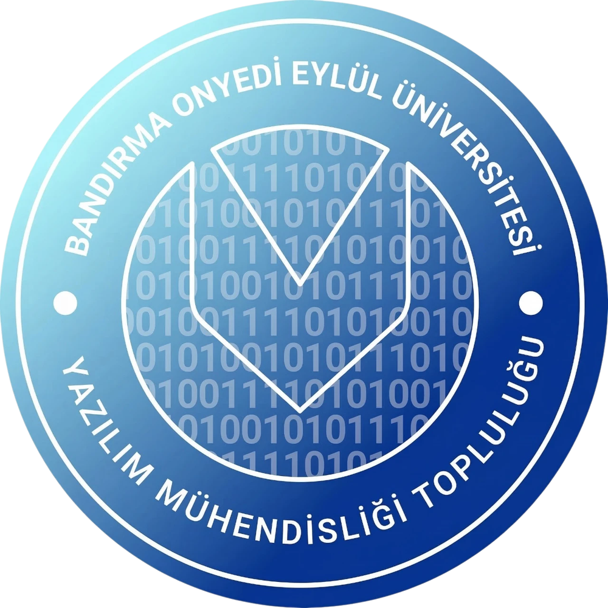
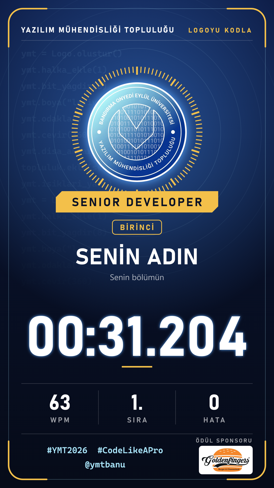
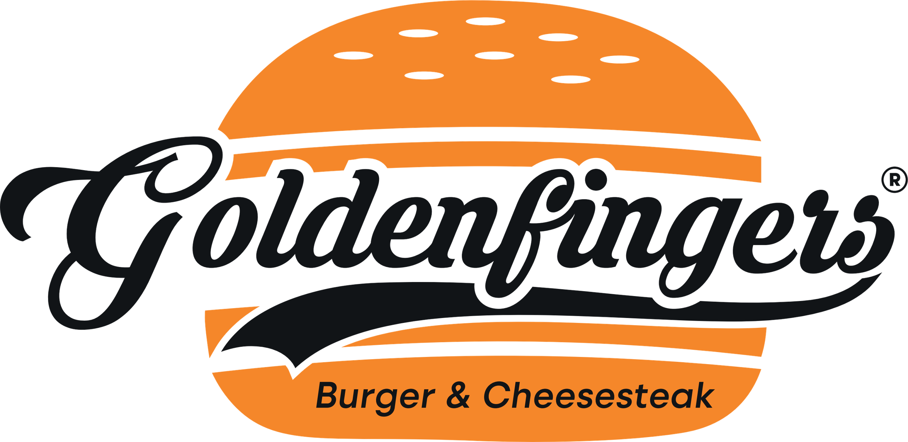

KAÇ SANİYEDE
KOD YAZARSIN?
YAZILIM MÜHENDİSLİĞİ TOPLULUĞU
Kodu yaz, logoyu inşa et
Kod bilmene gerek yok
Ekrandaki kodu en hızlı sen yaz


Kartını al, story'de paylaş

İlk 3'e
Goldenfingers'tan ödül
0 hatayla bitirene özel ödül
Standımıza gel,
klavyeni konuştur.
@ymtbanu
Yazılım Mühendisliği TopluluğuBandırma Onyedi Eylül Üniversitesi